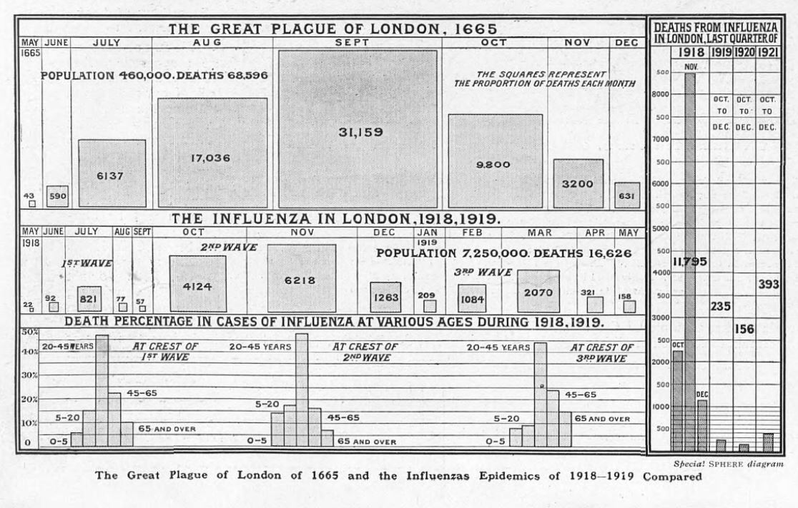
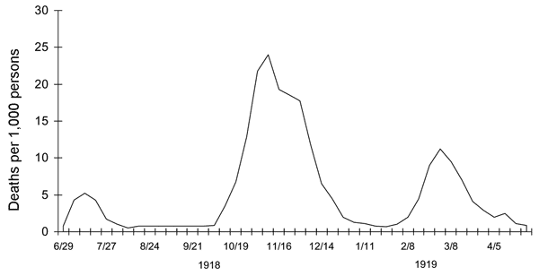

2.1. Fragestellung#
Dass Pandemien ihre je eigenen Verlaufsprofile entwickeln, konnte Zeitgenoss:innen vor wenigen Jahren am Verlauf der COVID19-Pandemie miterleben. Schnell wurde die Rede von den “Wellen” der Corona-Pandemie sprichwörtlich. Auch während der Spanischen Grippe wurde bereits von “Wellen” bzw. von “Waves” gesprochen und diese spezifische Verlaufsform graphisch dokumentiert (siehe Fig. 1).
{kind=link}

Fig. 2.2 Vergleichende Grafik zum Verlauf der Pest (1665) und der Spanischen Grippe (1918/19) in London. Quelle: [Staveley-Wadham, n.d.]#
Aus Perspektive einer medienwissenschaftlich informierten historischen Epidemiologie überlagern sich dabei unterschiedliche Wellen: Während ‘Fallzahlen‘ (z.B. die Anzahl der Infektionen oder die Anzahl der Todesfälle), wie sie in Fig. 1 dargestellt werden, ein in erster Linie medizinisch zu erhebendes Maß sind, sind die unterschiedliche Intensität und Extensität der öffentlichen Wahrnehmung des pandemischen Geschehens ein Untersuchungsgegenstand der (historischen) Medienwissenschaft. Auch hier ist davon auszugehen, dass sich charakteristische “Mediengezeiten” oder eben: “Medienwellen” zeigen: Mal dominiert die Pandemie den öffentlichen Diskurs, mal tritt sie in der öffentlichen Wahrnehmung zurück.
Diese Fallstudie führt durch ein Digital Humanities-Forschungsprojekt, das aus medienhistorischer Perspektive den Verlauf der “Medienwellen” während der Spanischen Grippe 1918/19 – bekannt auch als “the Mother of All Pandemics” [Taubenberger and Morens, 2006] – in Berlin und Brandenburg untersucht hat. Das Forschungsprojekt wurde von der folgenden Forschungsfrage geleitet:
Forschungsfrage
Lassen sich für die Spanische Grippe 1918/1919 mit Fokus auf den Berliner Raum Muster in der öffentlichen Aufmerksamkeit ausmachen, die eine wellenartige Verlaufsform aufweisen?
Als eine Orientierungsgröße für ein wellenartiges Muster nehmen wir – in Form einer Hypothese – das Verlaufsprofil der medizinischen Welle der Spanischen Grippe, wie es für Großbritannien berechnet und visualisiert wurde (Fig. 3).
{kind=link}

Fig. 2.3 Drei Wellen der Spanischen Grippe im Vereinigten Königreich. Quelle: [Taubenberger and Morens, 2006]#
2.1.1. Bibliographie#
Rose Staveley-Wadham. The british newspaper archive blog spanish flu in the newspapers \textbar the british newspaper archive blog. URL: https://blog.britishnewspaperarchive.co.uk/2021/01/14/spanish-flu-pandemic-newspapers/ (visited on 2024-06-20).
Jeffery K. Taubenberger and David M. Morens. 1918 influenza: the mother of all pandemics. Emerging Infectious Diseases journal, 12:15–22, 2006. doi:10.3201/eid1201.050979.